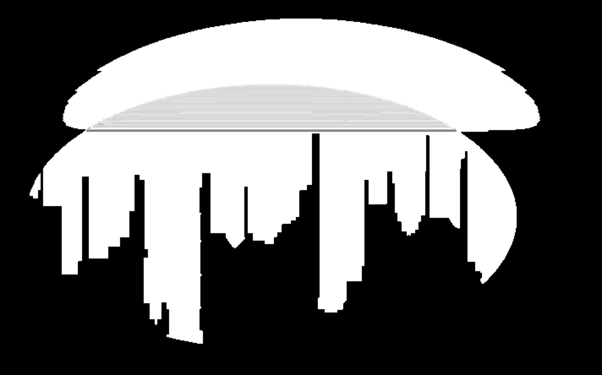
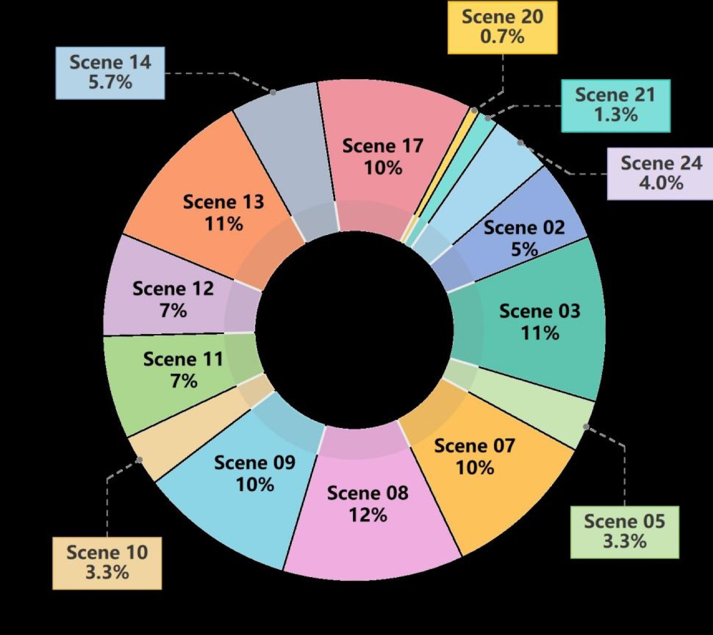

1. 개요 (Overview)
1.1 출판 정보 (Publication Information)
- 논문 제목 (Paper Title): FineCog-Nav: Integrating Fine-grained Cognitive Modules for Zero-shot Multimodal UAV Navigation
- 저자 (Authors): Dian Shao, Zhengzheng Xu, Peiyang Wang, Like Liu, Yule Wang, Jieqi Shi (교신저자), Jing Huo
- 소속 (Affiliation):
- Dian Shao, Zhengzheng Xu, Like Liu, Yule Wang: Northwestern Polytechnical University (NPU), Xi'an, China
- Peiyang Wang, Jieqi Shi, Jing Huo: Nanjing University, Nanjing, China
- 발표처 (Published): CVPR 2026 Findings (IEEE/CVF Conference on Computer Vision and Pattern Recognition 2026)
- DOI: https://doi.org/10.48550/arXiv.2604.16298
- arXiv: https://arxiv.org/abs/2604.16298v1
- 프로젝트 페이지: https://smartdianlab.github.io/projects-FineCogNav
- 코드: 미공개 (프로젝트 페이지에서 공개 예정)
- 지원: NSFC Grant 62306239, Grant 62506153; 섬서성 Sanqin Talents Introduction Plan
1.2 연구 목표 (Research Objective)
FineCog-Nav는 UAV(무인 항공기) 비전-언어 내비게이션(VLN) 분야에서 제로샷(zero-shot) 설정의 핵심 한계를 해결하기 위한 인지 기반 모듈러 프레임워크다. 기존 제로샷 VLN 방법론들은 GPT-4V 수준의 초대형 모델(LFMs)에 의존하거나, 모듈 간 느슨한 조율로 인한 성능 한계에 봉착해왔다. FineCog-Nav의 핵심 질문은: "인간의 인지 구조—언어 처리, 지각, 주의, 기억, 상상, 추론, 의사결정—를 세분화된 독립 모듈로 명시적으로 구현하면, 중간 크기 모델(72B 이하)로도 UAV 장거리 내비게이션을 효과적으로 수행할 수 있는가?"
연구의 두 가지 핵심 기여:
- FineCog-Nav 프레임워크: 7가지 인지 기능을 독립 모듈로 구현하고, 각 모듈이 역할 특화 프롬프트와 구조화된 입출력 프로토콜을 통해 협력하는 제로샷 UAV VLN 시스템
- AerialVLN-Fine 벤치마크: 기존 AerialVLN의 데이터 품질 문제를 해결하고 문장 수준 주석을 추가한 300개 고품질 궤적 데이터셋
2. 문제 정의 (Problem Definition)
2.1 도전과제 (Challenges)
A. UAV VLN의 고유한 난이도
지상 기반 VLN과 달리, UAV 내비게이션은 근본적으로 더 복잡한 3차원 공간에서 에고센트릭(egocentric) 관점의 탐색을 요구한다:
지상 VLN의 특성:
이동 공간: 2D (수평면 이동)
시점: 카메라 높이 고정
랜드마크: 문, 가구 등 근거리 밀집 배치
평균 경로 길이: ~10m, ~15 단계
UAV VLN의 특성:
이동 공간: 3D (고도 변화 포함)
시점: 비행 중 연속 변화 (에고센트릭 FPV)
랜드마크: 건물, 강, 다리 등 원거리 분산 배치
평균 경로 길이: ~189m, ~76 단계 (AerialVLN-Fine 기준)
장거리 비율: 지상 VLN 대비 10-15배 긴 궤적
B. 기존 제로샷 방법의 한계
현재 제로샷 UAV VLN의 주요 문제:
1. 초대형 모델 의존성 문제:
현상: CityNavAgent [Zhang et al., 2025]에서
GPT-4V 사용 시 SR: 28.3%
LLaVA-7B 교체 시 SR: 1.7% (→ 94% 성능 하락)
원인: 일반적인 프롬프트가 소형 모델의 추론 능력을 충분히 활용하지 못함
결과: 엣지 디바이스 배치 불가 (대용량 메모리, 높은 지연)
2. 느슨한 모듈 조율 문제:
기존 아키텍처 (NavGPT 류):
인식 모듈 → [정보 전달] → 계획 모듈 → [정보 전달] → 행동 모듈
문제:
- 모듈 간 정보 전달이 비구조화된 자연어 텍스트로만 이루어짐
- 인식 결과가 기억 모듈에 반영되지 않고 즉시 소실
- 하위 목표(subgoal) 달성 여부를 판단하는 명시적 메커니즘 부재
- 장거리 궤적에서 인지 일관성 유지 불가
3. UAV 특화 요소 누락:
기존 방법에서 누락된 UAV 핵심 요소:
- 계층적 경로 계획 (장거리 → 중간 지점 → 단계별 행동)
- 동적 하위 목표 추출 및 완료 판단
- 3D 공간에서의 충돌 경고 시스템
- UAV 연속 제어 명령 매핑
4. 평가 데이터의 품질 문제:
AerialVLN 원본 데이터셋의 문제:
- 궤적-지시 정렬 불일치 (지시가 궤적과 맞지 않음)
- 모호한 지시어 ("the building"이 여러 건물 중 어느 것인지 불명확)
- 충돌 이상값 (궤적이 장애물을 통과)
- 보이지 않거나 식별 불가능한 랜드마크 참조
2.2 핵심 해결책
FineCog-Nav의 해결 전략은 인간 인지 심리학의 구조적 분리 원리를 VLN에 적용하는 것이다. 인간이 복잡한 내비게이션 과제를 수행할 때 뇌는 각기 다른 인지 기능을 병렬적으로, 그러나 통합적으로 활용한다:
인간의 인지 내비게이션 구조:
언어 이해: "다음 신호등에서 오른쪽으로 돌아라" → 하위 목표 파악
지각: 현재 시야에서 신호등, 건물, 도로 인식
주의: "신호등"에 주의 집중, 배경 노이즈 억제
기억: "이전에 오른쪽에 이미 돌았음"을 기억
상상: "오른쪽으로 돌면 어떤 장면이 펼쳐질까?" 예측
추론: "아직 목적지에 도달하지 않았다, 계속 이동해야 한다"
의사결정: "오른쪽 전진 3m" 행동 선택
→ FineCog-Nav는 이 7가지 기능을 독립 모듈로 구현
3. 핵심 방법론 (Core Methods)
3.1 인지 모듈 아키텍처 개요
FineCog-Nav는 UAV 내비게이션을 7개의 인지 모듈과 3단계 파이프라인으로 구성한다:
[입력층]
자연어 지시 I = {I_1, I_2, ..., I_N} (N개 지시문)
에고센트릭 RGB 관찰 O_t (시간 t에서의 UAV 카메라 영상)
충돌 경고 W_t (규칙 기반 장애물 감지 신호)
[파이프라인]
Stage 1: 지시 분해 (Instruction Parsing)
Instruction Parser → 지시문 I_i를 하위 목표 집합으로 분해
Subgoal Extractor → {g_i^(1), g_i^(2), ..., g_i^(K)}
Stage 2: 장면 이해 (Scene Understanding)
Perception Module → 장면 설명 P_t (현재 시야 기술)
Attention Module → A_t (핵심 랜드마크 및 시각적 단서 강조)
Imagination Module → R[g_i^(k)] (하위 목표 완료 시 예상 장면)
Stage 3: 실행 결정 (Execution & Decision)
Memory Module → M (3단계 계층적 기억)
Subgoal Judger → J(...) → {True, False}
Decision Module → {p, a_t, τ} (행동 선호도, 행동, 해석)
[출력층]
a_t ∈ A = {전진, 후진, 좌회전, 우회전, 상승, 하강, 정지}
τ: 해석 가능한 추론 근거
3.2 지시 파서 및 하위 목표 추출기 (Instruction Parser & Subgoal Extractor)
복잡한 장거리 지시를 관리 가능한 단위로 분해하는 첫 번째 단계:
입력 지시 예시:
I_3 = "Turn right to face the river and follow the water way until
reaching a bridge"
지시 파서 처리:
I_3 → 의미 단위 분해 →
하위 목표 추출기 적용:
g_3^(1) = "Turn right and face the river" (방향 전환)
g_3^(2) = "Follow waterway" (경로 추적)
g_3^(3) = "Reach the bridge" (목표 도달)
핵심 설계 원칙:
- 각 하위 목표 = 시각적으로 검증 가능한 체크포인트
- 명시적 랜드마크 또는 행동 동사 포함
- 순서적 의존성 인코딩 (g_i^(k) 완료 후 g_i^(k+1) 진행)
역할 특화 프롬프트 구조:
시스템 프롬프트 [지시 파서]:
역할: "You are an instruction segmentation expert for UAV navigation."
일반 태스크: "Break down the given instruction into sequential subtasks."
UAV 특화: "Consider 3D movement including altitude changes,
and identify visual landmarks in each subtask."
I/O 프로토콜: "Output: JSON array of {subgoal_id, description, landmark}"
3.3 지각 및 주의 모듈 (Perception & Attention Modules)
현재 에고센트릭 관찰을 분석하는 두 번째 단계:
지각 모듈 (Perception Module P):
입력: 에고센트릭 RGB 이미지 O_t
역할: 장면을 1인칭 시점으로 서술
출력 P_t: "I currently see a wide bridge spanning a river.
The bridge appears to be approximately 50 meters long.
There are traffic barriers on both sides."
주의 모듈 (Attention Module AT):
입력: P_t + 현재 하위 목표 g_i^(k)
역할: 하위 목표와 관련된 핵심 시각 단서 식별
출력 A_t: "Key landmarks relevant to current subgoal 'reach bridge':
- BRIDGE: Detected in forward direction, ~30m distance
- RIVER: Visible on both sides, confirming waterway alignment
- BARRIERS: Road safety indicators on bridge edges"
모듈 간 상호작용:
P_t ──────→ Subgoal Judger (현재 관찰 제공)
A_t ──────→ Decision Module (주의 집중 랜드마크 제공)
A_t ──────→ Memory Module (중요 시각 단서 기억화)
VLM 선택 원칙:
Perception/Attention에 사용된 VLM: Qwen2.5-VL-32B
선택 기준:
- 32B 파라미터: 엣지 배치 고려 (VS. GPT-4V의 수백 B)
- 에고센트릭 이미지 처리 능력 검증됨
- API 인터페이스 제공 (모든 실험에서 동일 VLM 고정)
3.4 상상 모듈 (Imagination Module)
FineCog-Nav의 가장 독창적인 모듈 중 하나로, 하위 목표 완료 시 예상되는 장면을 제약적 방식으로 생성한다:
상상 모듈의 역할:
목적: 하위 목표 g_i^(k) 완료 시점의 예상 장면 R[g_i^(k)] 생성
조건부 생성:
입력: 현재 하위 목표 g_i^(k) + 인접 하위 목표 g_i^(k±1) + 관련 랜드마크
출력: "Upon reaching the bridge, the scene should show:
- Bridge structure directly in front or below
- River visible on both sides
- Transition from water to bridge surface visible"
설계 철학:
❌ 오픈-엔디드 장면 생성 (환각 위험)
✅ 랜드마크 중심의 제약적 기술 생성 (환각 억제)
환각 억제 메커니즘:
- 현재 지시 I_i에 언급된 랜드마크로 범위 제한
- 인접 하위 목표 정보로 일관성 유지
- "Brief, landmark-centric description" 형식 강제
상상 모듈의 하위 목표 판단 기여:
수식 (5):
J(O_t, g_i^(k), M^[g_i^(k)], R^[g_i^(k)]) → {True, False}
판단 논리:
IF 현재 관찰 O_t ≈ 상상된 기준 상태 R[g_i^(k)] THEN True
세 가지 증거 통합:
1. O_t: 현재 시각 관찰 (실제)
2. M^[g_i^(k)]: 하위 목표 관련 기억 (역사)
3. R^[g_i^(k)]: 상상된 기준 상태 (기대)
장점: 단일 모달리티 판단 대비 훨씬 높은 신뢰도
3.5 계층적 기억 관리 (Multi-level Memory Module)
FineCog-Nav의 기억 모듈은 3단계 계층 구조로 장기 문맥을 유지한다:
Level 1: 단계 기억 (Step Memory) M[t]
저장 내용: 시간 t에서의 관찰 + 행동
형식: "I see [P_t summary]. I do [a_t]."
역할: 최근 몇 단계의 상세 이력 보존
Level 2: 하위 목표 기억 (Subgoal Memory) M^[g_i^(k)]
저장 내용: 하위 목표 g_i^(k) 수행 중의 단계 기억들
완료 시 압축: LLM이 단계 기억들을 콤팩트한 요약으로 통합
M^[g_i^(k)]_★ = LLM_summarize({M[t] : t ∈ 하위 목표 k 수행 기간})
영감: 인간 기억 공고화(memory consolidation) 원리
Level 3: 지시 기억 (Instruction Memory) M^[I_i]
저장 내용: 지시 I_i에 속한 모든 완료된 하위 목표 요약들
수식 (6): M^[I_i] = {M^[g_i^(1)]_★, M^[g_i^(2)]_★, ..., M^[g_i^(k)]_★}
역할: 지시 전체에 걸친 장기 문맥 유지
계층 기억의 장점 (Ablation 결과):
플랫 히스토리(NavGPT 방식) 대비:
SR2D: 0.67% → 6.00% (+795%) ← 계층 기억이 결정적
OSR: 2.67% → 9.00% (+237%)
NE: 97.76m → 91.43m (-6.4%)
기억 공고화 알고리즘:
def consolidate_subgoal_memory(step_memories, llm):
"""하위 목표 완료 시 단계 기억들을 요약"""
prompt = f"""
Summarize the following navigation steps for subgoal completion:
Steps: {step_memories}
Provide a concise summary capturing:
1. What was observed (key landmarks)
2. What actions were taken
3. Current spatial position relative to goal
Format: [Landmark observations] → [Key actions] → [Current status]
"""
return llm.generate(prompt) # 압축된 하위 목표 기억 반환
3.6 의사결정 모듈 (Decision-Making Module)
최종 행동을 선택하는 모듈로, 5가지 정보를 통합한다:
입력 (수식 7):
g_i^(k): 현재 하위 목표
I_i: 현재 지시문
O_t: 현재 시각 관찰
W_t: 충돌 경고 신호
M^[I_i]: 계층적 지시 기억
출력:
p: 후보 행동들에 대한 상대적 선호도 점수
a_t: 최적 선택 행동 (최고 점수 행동)
τ: 해석 가능한 추론 근거 (interpretable rationale)
행동 공간 A = {
Forward, Backward, # 전후 이동
Turn_Left, Turn_Right, # 방향 전환
Ascend, Descend, # 고도 변경
Stop # 목표 도달 판단
}
추론 근거 τ 예시:
"I observe the bridge 30 meters ahead which matches subgoal 3.
Memory confirms I have been following the river.
No collision warning detected. Optimal action: Forward."
3.7 전체 내비게이션 루프 (Navigation Loop)
초기화:
지시 I = {I_1, ..., I_N} 수신
하위 목표 추출: {g_1^(1), ..., g_N^(K)} 생성
기억 초기화: M^[I_i] = {} for all i
각 시간 단계 t에서:
1. 관찰 O_t, 충돌 W_t 획득
2. 지각 P_t = Perception(O_t)
3. 주의 A_t = Attention(O_t, g_i^(k))
4. 기억 업데이트: M[t] = record(P_t, A_t)
5. 하위 목표 판단: done = J(O_t, g_i^(k), M^[g_i^(k)], R^[g_i^(k)])
IF done: M^[g_i^(k)]_★ 생성, M^[I_i] 업데이트, g_i^(k+1)로 전환
6. 의사결정: {p, a_t, τ} = D(g_i^(k), I_i, O_t, W_t, M^[I_i])
7. 행동 a_t 실행
종료 조건:
모든 지시 I_N의 모든 하위 목표 완료 OR 최대 단계 수 도달
4. 시스템 아키텍처 (System Architecture)
4.1 전체 파이프라인 다이어그램
┌─────────────────────────────────────────────────────────────────┐
│ FineCog-Nav 시스템 │
│ │
│ [자연어 지시 I] [에고센트릭 관찰 O_t] [충돌 경고 W_t] │
│ │ │ │ │
│ ▼ ▼ │ │
│ ┌──────────────┐ ┌──────────────────┐ │ │
│ │ Instruction │ │ Perception │ │ │
│ │ Parser │ │ Module │ │ │
│ │ (LLM) │ │ (VLM-32B) │ │ │
│ └──────┬───────┘ └────────┬─────────┘ │ │
│ │ │ │ │
│ ▼ ▼ │ │
│ ┌──────────────┐ ┌──────────────────┐ │ │
│ │ Subgoal │ │ Attention │ │ │
│ │ Extractor │ │ Module │ │ │
│ │ (LLM) │ │ (LLM) │ │ │
│ └──────┬───────┘ └────────┬─────────┘ │ │
│ │ │ │ │
│ ▼ ▼ │ │
│ {g_i^(k)} ┌──────────────────┐ │ │
│ │ │ Imagination │ │ │
│ │ │ Module │ │ │
│ │ │ (LLM) │ │ │
│ │ └────────┬─────────┘ │ │
│ │ │ R[g_i^(k)] │ │
│ │ ▼ │ │
│ │ ┌──────────────────┐ │ │
│ ├──────────────→│ Subgoal Judger │←───────────────┐│ │
│ │ │ (LLM) │ ││ │
│ │ └────────┬─────────┘ ││ │
│ │ │ ││ │
│ │ ┌─────────────────┼────────────────────────┐ ││ │
│ │ │ Memory Module (LLM) │ ││ │
│ │ │ Step: M[t] → Subgoal: M[g]★ → Inst: M[I]│ ││ │
│ │ └─────────────────┬────────────────────────┘ ││ │
│ │ │ M^[I_i] ││ │
│ ▼ ▼ ││ │
│ ┌─────────────────────────────────────────────────────────┐ │
│ │ Decision-Making Module (LLM) │ │
│ │ g_i^(k) + I_i + O_t + W_t + M^[I_i] → {p, a_t, τ}│←────┘│
│ └─────────────────────────────────────────────────────────┘ │
│ │ │
│ ▼ │
│ [행동 a_t 실행 → UAV 이동] │
└─────────────────────────────────────────────────────────────────┘
4.2 데이터 흐름 상세
T=1: 지시 분해 단계 (1회)
Input: "Lift off and head towards the bridge..."
Parser: 5개 지시문으로 분리
Extractor: 각 지시문에서 2-4개 하위 목표 추출
→ 총 ~15개 하위 목표 생성
T=t (각 내비게이션 단계):
RGB Frame ──→ VLM-32B (Perception) → P_t (장면 기술)
├──→ LLM (Attention) → A_t (주의 단서)
└──→ LLM (Imagination) → R[g_i^(k)] (예상 장면)
메모리 업데이트:
M[t] = {P_t, A_t, a_{t-1}}
하위 목표 판단:
J(O_t, g_i^(k), M^[g_i^(k)], R^[g_i^(k)]) → True/False
→ True: 기억 압축 & 다음 하위 목표로 전환
의사결정:
{M^[I_i], g_i^(k), W_t} → LLM → a_t
API 호출 횟수 (1 내비게이션 단계당):
Perception: 1 (VLM)
Attention: 1 (LLM)
Subgoal Judger: 1 (LLM)
Decision: 1 (LLM)
Total: ~4 API calls per step
→ 76단계 평균 궤적: ~304 API calls per trajectory

5. 실험 결과 및 성능 (Experimental Results)
5.1 데이터셋 (Datasets)
AerialVLN-Fine (신규 제안)
출처: AerialVLN [Liu et al., ICCV 2023]의 검증 세트에서 선별
크기: 300개 고품질 궤적 (15개 장면, 장면당 ~20개)
평균 궤적 길이: 189m
평균 행동 수: 76 steps
지시문 수: 평균 4.6개 문장 (문장 수준 주석 포함)
지시 길이: 평균 103 단어 (원본 59 → 1.75배 상세화)
총 문장 수: 1,383개 (문장당 평균 41m, 17 actions)
5가지 역량 차원: 방향 추적, 랜드마크 탐색, 거리 추정, 고도 조절, 전환 인식
품질 보증 프로세스:
1. 수동 검토 및 선별:
- 4가지 품질 기준으로 각 궤적 수동 확인
- 장면당 ~20개 다양한 고품질 샘플 유지
2. 지시 분할 및 정제:
- 복잡한 지시를 문장 단위로 분할
- 명시적 행동 동사, 명확한 끝점, 명확한 랜드마크로 정제
3. 궤적 분할 및 정렬:
- 궤적을 지시 문장에 정밀 정렬
4. 품질 관리:
- 모든 주석 다중 라운드 수동 검토
AerialVLN-S-Val (기존 벤치마크)
크기: 864개 궤적 (더 크고 노이즈 있음)
사용 목적: 로버스트니스 및 확장성 검증
5.2 평가 지표 (Evaluation Metrics)
3D 확장 메트릭 (기존 2D → 3D 공간으로 확장):
NE (Navigation Error):
정의: UAV 최종 위치와 목표 간 3D 유클리드 거리 (m)
계산: ||p_final - p_goal||_3D
해석: 낮을수록 좋음
SR2D / SR3D (Success Rate):
정의: 목표로부터 20m 이내에 도달한 궤적의 비율 (%)
2D: (x,y) 평면 거리 기준
3D: (x,y,z) 3D 거리 기준
해석: 높을수록 좋음
OSR (Oracle Success Rate):
정의: 궤적 중 어느 시점에서든 목표 20m 이내에 도달한 비율 (%)
해석: 목표 "통과" 여부 측정, 정지 조건 무관
nDTW (Normalized Dynamic Time Warping):
정의: 실제 궤적과 참조 궤적 간의 유사도 (0~1)
해석: 높을수록 궤적 충실도 우수
PL (Path Length): 총 이동 거리 (m)
Steps: 총 행동 수
5.3 정량적 결과 (Quantitative Results)
표 1: LLM 크기별 Single-module BaseModel vs. FineCog-Nav (AerialVLN-Fine)
모든 실험에서 VLM = Qwen2.5-VL-32B 고정
| 모델 | 방법 | SR2D(%) | SR3D(%) | OSR(%) | NE(m)↓ | nDTW(%) | PL(m) | Steps |
|---|---|---|---|---|---|---|---|---|
| Gemini 2.5 Flash-Lite | BaseModel | 1.33 | 1.00 | 3.67 | 240.04 | 8.84 | 329.78 | 129.70 |
| FineCog-Nav | 4.00 | 2.67 | 6.33 | 120.70 | 15.66 | 146.24 | 57.52 | |
| GPT-4o-mini | BaseModel | 0.33 | 0.33 | 2.00 | 325.98 | 8.74 | 350.43 | 103.10 |
| FineCog-Nav | 4.00 | 2.33 | 3.67 | 100.37 | 20.45 | 56.98 | 31.73 | |
| InternLM3-8B | BaseModel | 0.67 | 0.33 | 3.33 | 128.13 | 14.01 | 86.30 | 34.65 |
| FineCog-Nav | 2.67 | 2.33 | 6.67 | 120.72 | 14.91 | 139.72 | 42.22 | |
| ChatGLM-4-9B | BaseModel | 1.00 | 0.33 | 1.33 | 124.03 | 13.27 | 50.19 | 20.36 |
| FineCog-Nav | 3.00 | 2.67 | 2.67 | 97.05 | 19.26 | 30.49 | 19.39 | |
| InternLM2.5-20B | BaseModel | 0.33 | 0.33 | 1.67 | 152.34 | 9.94 | 141.27 | 74.16 |
| FineCog-Nav | 2.00 | 2.00 | 4.00 | 103.94 | 19.35 | 61.05 | 28.49 | |
| ChatGLM-4-32B | BaseModel | 2.33 | 2.00 | 5.00 | 180.66 | 10.59 | 235.03 | 104.20 |
| FineCog-Nav | 3.33 | 2.33 | 5.33 | 94.18 | 21.25 | 45.91 | 20.18 | |
| Qwen3-32B | BaseModel | 2.67 | 3.00 | 6.33 | 142.72 | 17.07 | 114.56 | 39.12 |
| FineCog-Nav | 5.00 | 4.00 | 7.00 | 95.31 | 20.31 | 60.36 | 26.05 | |
| Llama3.3-70B | BaseModel | 3.00 | 2.67 | 5.67 | 263.10 | 9.67 | 329.36 | 111.48 |
| FineCog-Nav | 6.67 | 6.00 | 9.67 | 98.84 | 20.17 | 84.96 | 38.91 | |
| Qwen2.5-72B | BaseModel | 2.67 | 2.67 | 6.33 | 270.10 | 10.69 | 298.24 | 116.91 |
| FineCog-Nav | 8.00 | 6.00 | 9.00 | 91.43 | 22.48 | 67.96 | 33.90 |
핵심 관찰:
- FineCog-Nav는 모든 LLM 크기에서 BaseModel을 지속적으로 능가
- 72B 모델 기준 SR2D: 2.67% → 8.00% (+199% 향상)
- 72B 모델 기준 NE: 270.10m → 91.43m (−66% 감소)
- LLM이 커질수록 FineCog-Nav의 성능 향상 폭이 더 큼 → 강한 확장성
- 단순히 LLM 크기를 키우는 것만으로는 BaseModel이 일관된 개선을 보이지 않음
표 2: 프레임워크 기준선 비교 (AerialVLN-Fine + AerialVLN-S-Val)
모든 방법: Qwen2.5-72B + Qwen2.5-VL-32B
| 데이터셋 | 방법 | SR2D(%) | SR3D(%) | OSR(%) | nDTW(%) | NE(m)↓ | PL(m) | Steps |
|---|---|---|---|---|---|---|---|---|
| AerialVLN-Fine | NavGPT | 0.33 | 0.00 | 0.67 | 15.90 | 110.94 | 21.44 | 9.33 |
| DiscussNav | 2.67 | 2.67 | 3.33 | 19.63 | 98.36 | 39.51 | 17.76 | |
| FineCog-Nav | 8.00 | 6.00 | 9.00 | 22.48 | 91.43 | 67.96 | 33.90 | |
| AerialVLN-S-Val | NavGPT | 0.12 | 0.12 | 0.46 | 8.29 | 135.65 | 44.92 | 13.02 |
| DiscussNav | 0.46 | 0.46 | 0.93 | 8.33 | 158.46 | 81.06 | 22.46 | |
| FineCog-Nav | 1.97 | 1.50 | 1.85 | 11.47 | 130.32 | 75.28 | 34.52 |
주요 차별점:
- NavGPT: 환경 탐색 거의 없음 → 21m 경로 길이 (매우 짧음, 조기 정지)
- DiscussNav: 다중 라운드 대화로 효율 저하
- FineCog-Nav: 가장 높은 SR, OSR, nDTW, 가장 낮은 NE
5.4 절제 연구 (Ablation Studies)
표 3: 인지 모듈 제거 실험 (Qwen2.5-72B, AerialVLN-Fine)
| Attn | Imag | Subgoal | Memory | SR(%) | OSR(%) | NE(m) | nDTW(%) | S-SR(%) | S-NE(m) |
|---|---|---|---|---|---|---|---|---|---|
| ✗ | ✓ | ✓ | H | 3.00 | 7.00 | 104.38 | 19.55 | 19.92 | 66.21 |
| ✓ | ✗ | ✓ | H | 3.67 | 5.00 | 101.27 | 19.67 | 20.48 | 64.85 |
| ✓ | ✓ | ✗ | H | 2.00 | 4.33 | 102.32 | 19.13 | 19.42 | 65.54 |
| ✓ | ✓ | ✓ | P | 0.67 | 2.67 | 97.76 | 19.69 | 19.42 | 62.90 |
| ✗ | ✗ | ✓ | H | 3.67 | 8.67 | 106.59 | 18.14 | 19.35 | 70.16 |
| ✓ | ✗ | ✗ | H | 4.00 | 8.67 | 98.75 | 19.78 | 16.68 | 65.36 |
| ✓ | ✓ | ✓ | H | 6.00 | 9.00 | 91.43 | 22.48 | 22.03 | 59.02 |
H = 계층적 기억 (Hierarchical Memory)
P = 평탄 히스토리 (Plain History)
핵심 발견:
- 계층적 기억 제거가 가장 큰 성능 저하: SR2D 6.00% → 0.67% (-89%)
- 하위 목표 메커니즘 제거: SR 2.00%로 하락, 문장 수준 S-SR도 최저
- 모듈 결합 제거(행 5,6): 단일 모듈 제거보다 일부 지표가 높은 역설 → "긴밀하게 결합된 모듈들은 하나 제거 시 연쇄 실패 유발, 둘 다 제거하면 해당 실패 회피"
- 전체 모듈 활성화가 모든 메트릭에서 최고 성능
5.5 리얼월드 배치 (Real-World Deployment)
FineCog-Nav의 예비 실세계 검증이 수행되었다:
실험 설정:
하드웨어: RoboMaster TT UAV
환경: 실내 공간
지시: "Find a chair for me, then land on the table"
결과:
- 에이전트가 단계적 탐색 수행
- 중간 하위 목표(의자 찾기) 달성
- 17 단계 만에 목표 지점(테이블) 도달
- 시작점, 하위 목표 포인트, 종점 시각화 성공
한계:
- 센서 노이즈, 제어 오차에 대한 처리는 미래 과제
- 단일 예비 실험으로 통계적 검증 미흡
- 복잡한 외부 환경에서의 성능 미확인

6. 핵심 기여점 (Key Contributions)
6.1 FineCog-Nav 프레임워크의 혁신성
기여 1: 세분화된 인지 모듈화의 최초 UAV VLN 적용
기존 방법들의 모듈화 수준:
NavGPT: 인식 + 기억 + 계획 (3모듈)
DiscussNav: 다중 에이전트 토론 (역할 정의 없음)
CityNavAgent: 계획 + 실행 (2단계)
FineCog-Nav:
7가지 인지 기능의 독립 모듈화
→ 각 모듈이 명확한 인지 역할을 가짐
→ 역할 특화 프롬프트로 소형 모델 잠재력 극대화
→ 모듈 간 구조화된 정보 전달 프로토콜
기여 2: 상상 모듈 (Imagination Module)의 도입
- 기존 VLN 시스템에 없던 "예상 장면 생성" 기능
- 제약적 랜드마크 중심 생성으로 환각 억제
- 하위 목표 완료 판단 정확도 향상에 직접 기여
기여 3: 3단계 계층적 기억 시스템
- 인간 기억 공고화 원리를 LLM 기반 요약으로 구현
- 장거리 UAV 내비게이션의 문맥 유지 문제 해결
- NavGPT의 단순 히스토리 대비 압도적 성능 차이 입증
기여 4: AerialVLN-Fine 벤치마크
- 기존 AerialVLN의 품질 문제 해결
- 문장 수준 정렬 주석으로 세분화된 평가 가능
- 5가지 역량 차원 분류로 능력별 진단 지원
6.2 LLM 확장성 검증
FineCog-Nav의 중요한 특성: LLM 크기 확장에 따른 일관된 성능 향상
8B → 72B LLM 크기 증가 시:
FineCog-Nav SR2D: 2.67% → 8.00% (+199%)
BaseModel SR2D: 0.67% → 2.67% (+299%, 절대값은 낮음)
의미:
- 중간 크기 모델도 충분히 활용 가능 (엣지 배치 가능성)
- 더 강력한 모델 등장 시 자동으로 성능 향상
- 모듈러 설계가 LLM 발전과 함께 지속 개선 가능
7. 구현 상세 (Implementation Details)
7.1 모델 구성
VLM (모든 실험 고정):
모델: Qwen2.5-VL-32B
용도: Perception Module (장면 기술)
접근: API 호출
선택 이유: 에지 배치 고려 + 검증된 에고센트릭 이미지 이해
LLM (실험별 변경):
소형 (8-15B): InternLM3-8B, ChatGLM-4-9B
중형 (20-32B): InternLM2.5-20B, ChatGLM-4-32B, Qwen3-32B
대형 (70-72B): Llama3.3-70B, Qwen2.5-72B
클로즈드소스: Gemini 2.5 Flash-Lite, GPT-4o-mini
최대 파라미터 제한: 72B (엣지 배치 고려)
주요 하이퍼파라미터:
성공 임계값: 20m (2D 및 3D)
최대 내비게이션 단계: 지시 복잡도에 따라 가변
충돌 경고: 규칙 기반 시스템 (모든 방법 동일 적용)
7.2 UAV 연속 제어 매핑
LLM 출력 → UAV 제어 명령 매핑:
{Forward, Backward} → 전후 이동 속도 명령
{Turn_Left, Turn_Right} → 요(yaw) 회전 명령
{Ascend, Descend} → 고도 변화 명령
{Stop} → 호버링 명령
일관성 보장:
모든 방법(FineCog-Nav, NavGPT, DiscussNav)이 동일한 연속 UAV 명령 공간 사용
→ 공정한 비교 보장
7.3 충돌 경고 시스템
규칙 기반 충돌 감지:
입력: 환경 내 장애물 위치 + UAV 현재 위치
출력: 위험도 레벨 (없음/낮음/높음)
Decision Module 통합:
W_t를 입력으로 받아 안전 행동 선호 유도
"Collision warning: HIGH → 전진 행동 가중치 감소"
모든 방법에 동일 W_t 제공 (공정성 보장)
8. 고급 주제 (Advanced Topics)
8.1 한계점 및 실용적 고려사항
1. 계산 비용:
API 호출 오버헤드:
단계당: ~4 LLM/VLM API 호출
76단계 평균 궤적: ~304 API 호출
비용 추정 (Qwen2.5-72B 기준):
추론 지연: ~0.5-1초/호출 (API)
단계당: ~2-4초
전체 궤적: ~3-5분
→ 실시간 고속 UAV 제어에는 부적합
→ 조사/탐색 임무 (저속, 신중한 내비게이션)에 적합
2. 시뮬레이션-실세계 격차:
AerialVLN 환경: Unreal Engine 기반 시뮬레이션
실세계 배치 시 추가 문제:
- 센서 노이즈 (RGB 이미지 품질 저하)
- 제어 오차 (이동 명령의 불정확한 실행)
- GPS 신호 불안정
- 동적 장애물 (보행자, 차량)
현재 상태: 예비 실세계 실험만 수행 (통계적 검증 미흡)
3. 성능의 절대적 한계:
최고 성능 (Qwen2.5-72B, AerialVLN-Fine):
SR2D = 8.00%
비교 기준:
훈련된 SOTA 방법 (HTNav, NavDP): SR ~6.3-9.0% (AerialVLN-S)
완전 훈련 방법과 유사하나, 제로샷이라는 점에서 의미 있음
낮은 SR의 원인:
- UAV VLN의 근본적 어려움 (3D, 장거리)
- 제로샷 설정의 한계
- 현재 중간 크기 모델의 능력 상한
8.2 향후 연구 방향
1. 멀티모달 지도 통합:
현재 FineCog-Nav: 순수 에고센트릭 + 기억
향후 개선:
- 점유 지도 또는 토폴로지 맵 통합
- Bird's-eye view + FPV 하이브리드 지각
→ HTNav의 SCConv 맵 + FineCog-Nav의 인지 구조 결합 가능성
2. 실시간 엣지 배치:
현재 한계: API 호출 지연 (~2-4초/단계)
해결 방향:
- 양자화(quantization)된 소형 LLM 온디바이스 실행
- 모듈별 병렬 처리 최적화
- Key-Value 캐시 재활용으로 API 호출 최소화
3. 대규모 데이터셋 확장:
AerialVLN-Fine: 300개 궤적 (상대적 소규모)
향후:
- 동일 파이프라인으로 더 큰 규모 데이터셋 구축
- 야외 실세계 데이터 포함
- 다국어 지시 지원
9. 비교 분석 (Comparative Analysis)
9.1 기존 리뷰 논문과의 비교
VLN 트랙에서 기존에 리뷰된 논문들(HTNav, DeCoNav, GNPFkCT)과 FineCog-Nav를 체계적으로 비교한다.
| 특성 | HTNav (NUAA, arXiv'26) | DeCoNav (arXiv'26) | GNPFkCT (arXiv'26) | FineCog-Nav (CVPR'26) |
|---|---|---|---|---|
| 타겟 플랫폼 | 도심 항공 UAV | 지상 협력 로봇 2대 | 지상 로봇 | 항공 UAV (3D FPV) |
| 접근 방식 | Hybrid IL-RL | 대화 강화 협력 | POMDP+MCTS | 제로샷 인지 모듈 |
| 훈련 요구 | 필요 (IL+RL) | 필요 | 필요 (MCTS 통계) | 불필요 (zero-shot) |
| 벤치마크 | CityNav | DeCoNav-Bench | POMDP-Obj | AerialVLN / AerialVLN-Fine |
| 최고 SR | NE↓ 40.3m (CityNav) | 72.4% SR | 56.8% SR (seen) | SR2D 8.00% (AerialVLN-Fine) |
| 멀티로봇 | 아니오 | 예 (2 로봇) | 아니오 | 아니오 |
| 코드 공개 | 아니오 | 아니오 | 아니오 | 아니오 |
| 프로젝트 페이지 | 아니오 | 아니오 | 예 | 예 |
| 학회 | arXiv | arXiv | arXiv | CVPR 2026 Findings |
| 실세계 실험 | 아니오 | 아니오 | 예 (실제 로봇) | 예 (예비) |
| 인지 모듈 수 | 2 (Macro+Micro) | 2 (FH+SH 로봇) | 3 (인식+계획+실행) | 7 (인지 함수별) |
| 기억 계층 | 1 (맵 기반) | 2 (로봇 간 공유) | 없음 | 3 (단계/하위목표/지시) |
9.2 장단점 분석
FineCog-Nav의 장점:
1. 훈련 데이터 불필요 (제로샷)
→ 새로운 환경, 새로운 언어 모델에 즉시 적용 가능
→ HTNav/DeCoNav의 도메인 특화 훈련 없이도 유사 수준 성능
2. 최고 수준의 인터프리터빌리티
→ 각 단계에서 τ (추론 근거) 생성
→ 실패 원인 진단 가능 ("어느 모듈에서 오류가 발생했는가?")
3. LLM 확장성
→ 더 강력한 LLM 등장 시 자동 성능 향상
→ 특정 모델에 종속되지 않음
4. 상상 모듈의 독창성
→ 기존 VLN 시스템에 없던 "예상 장면" 기반 하위 목표 판단
→ 환각을 제약적 생성으로 억제하는 설계
5. CVPR 2026 출판
→ 피어 리뷰 검증된 방법론
→ 재현성과 신뢰성 확보
FineCog-Nav의 단점:
1. 낮은 절대 성능
→ SR2D = 8.0% (AerialVLN-Fine)
→ 훈련 기반 방법 대비 여전히 낮음
→ 복잡한 UAV VLN 환경에서의 근본적 한계
2. 높은 API 호출 비용
→ 단계당 ~4 API 호출
→ 실시간 제어에 부적합 (지연 문제)
→ 상용 API 비용 발생
3. 리얼월드 검증 부족
→ 시뮬레이션 기반 평가가 주
→ RoboMaster TT 예비 실험만으로는 충분하지 않음
4. 코드 미공개
→ 재현성 제한
→ 연구자들의 직접 검증 어려움
9.3 실적용 가능성 평가
적용 시나리오별 평가:
시나리오 1: 저속 UAV 수색-구조 임무
적합성: ★★★★☆
이유: 고도로 해석 가능한 의사결정, 안전 중시
속도 요구가 낮아 API 지연 허용
시나리오 2: 실시간 배달 UAV
적합성: ★★☆☆☆
이유: API 지연이 치명적, 더 빠른 반응 속도 필요
FineCog-Nav는 이 시나리오에 부적합
시나리오 3: 인도어 UAV 탐색/모니터링
적합성: ★★★☆☆
이유: 통제된 환경에서 합리적 성능
실세계 노이즈 처리 미흡
시나리오 4: 교육/연구 목적 UAV 에이전트
적합성: ★★★★★
이유: 투명한 의사결정, LLM 능력 벤치마킹에 이상적
인지 모듈 개별 연구 가능
9.4 연구 방향성 평가
FineCog-Nav는 UAV VLN 연구의 흥미로운 분기점을 제시한다:
방향 A: 훈련 기반 특화 방법 (HTNav, NavDP 류)
장점: 높은 성능, 빠른 추론
단점: 훈련 데이터 필요, 특정 환경/언어 종속
방향 B: 제로샷 LLM 기반 방법 (FineCog-Nav 류)
장점: 훈련 불필요, 해석 가능, 범용성
단점: 낮은 성능, 높은 비용
FineCog-Nav의 평가:
- CVPR 2026 게재로 방향 B의 가능성 공식 검증
- LLM 발전과 함께 빠르게 개선될 가능성 높음
- 장기적으로 방향 A와 B의 하이브리드가 최적
예상 발전 경로:
1단계: FineCog-Nav의 인지 구조 → 더 강력한 LLM으로 성능 향상
2단계: 인지 모듈별 파인튜닝 → 도메인 특화 개선
3단계: 훈련 기반 방법과 인지 모듈 통합 → 최적 하이브리드
10. 참고 문헌 (References)
- Shao, D., et al. "FineCog-Nav: Integrating Fine-grained Cognitive Modules for Zero-shot Multimodal UAV Navigation." CVPR 2026.
- Liu, S., et al. "AerialVLN: Vision-and-language navigation for UAVs." ICCV 2023.
- Long, Y., et al. "NavGPT: Explicit reasoning in vision-and-language navigation with large language models." AAAI 2024.
- Long, Y., et al. "Discuss before moving: Visual language navigation via multi-expert discussions." arXiv, 2023.
- Zhang, W., et al. "CityNavAgent: Aerial vision-and-language navigation with hierarchical semantic planning." arXiv 2025.
- Gao, Y., et al. "Aerial vision-and-language navigation via semantic-topo-metric representation guided LLM reasoning." arXiv 2024.
- Anderson, P., et al. "Vision-and-language navigation: Interpreting visually-grounded navigation instructions." CVPR 2018.
- Fan, C., et al. "HTNav: A Hybrid Navigation Framework with Tiered Structure for Urban Aerial VLN." arXiv 2026.
- Hu, C.Y., et al. "See, point, fly: A learning-free VLM framework for universal unmanned aerial navigation." CoRL 2025.
- Wang, X., et al. "Towards realistic UAV vision-language navigation: Platform, benchmark, and methodology." arXiv 2024.
11. 결론 (Conclusion)
FineCog-Nav는 UAV VLN 분야에서 제로샷 설정의 새로운 방향성을 제시한 CVPR 2026 논문이다. 핵심 혁신은 인간의 7가지 인지 기능(언어 처리, 지각, 주의, 기억, 상상, 추론, 의사결정)을 명시적인 독립 모듈로 구현하고, 각 모듈을 역할 특화 프롬프트와 구조화된 I/O 프로토콜로 협력시키는 것이다.
혁신성:
- 최초의 UAV VLN용 세분화 인지 모듈 프레임워크
- 상상 모듈: VLN 시스템에 최초로 "예상 장면" 개념 도입
- 계층적 기억(단계→하위목표→지시): LLM 기반 기억 공고화 구현
- AerialVLN-Fine: 문장 수준 주석을 포함한 새로운 고품질 벤치마크
실용적 의의:
- 훈련 데이터 없이 새로운 환경에 즉시 적용 가능
- 소중간형 LLM(8B~72B)으로 합리적 성능 달성
- 투명한 의사결정 과정 → 실패 진단 및 개선 용이
- 예비 실세계 배치 성공 → 실용화 가능성 초기 검증
한계와 미래 과제:
- 절대 SR이 여전히 낮음 (최고 8.0%) → LLM 발전으로 해결 가능
- API 지연 문제 → 온디바이스 소형 LLM 사용으로 해결 가능
- 리얼월드 검증 부족 → 향후 체계적 실험 필요
FineCog-Nav의 등장은 UAV VLN 커뮤니티에서 "훈련 기반 특화"와 "제로샷 범용" 두 접근의 균형점을 찾는 중요한 이정표다. 특히 LLM이 빠르게 발전하는 현재 트렌드에서, 인지 모듈 구조는 새로운 모델 등장과 함께 자동으로 개선되는 미래지향적 설계라는 점에서 높이 평가된다.
리뷰 작성일: 2026-04-21
논문 arXiv 등록일: 2026-04-17
리뷰어: NanoClaw Paper Bot